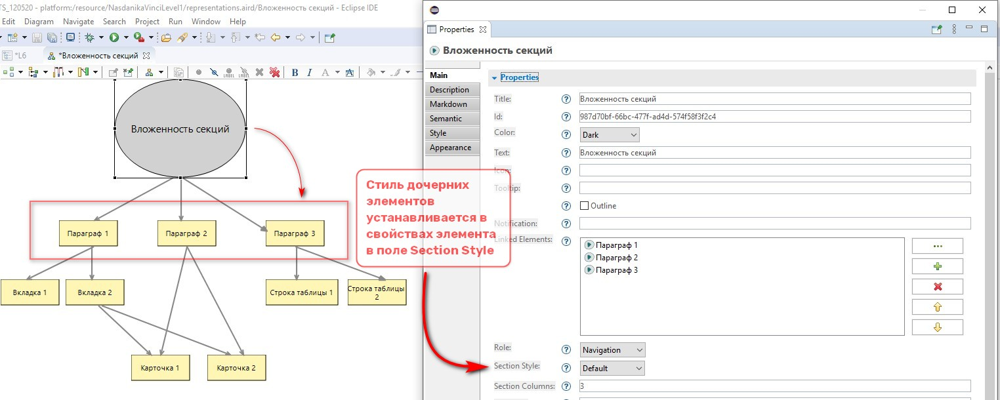

Рассмотрим вложенность секций на примере этой страницы.
Как видно из диаграммы, элемент модели Вложенность секций имеет навигационную роль и отражается в левой вертикальной навигационной панели. В нем установлена настройка Section Style = Default. Поэтому, если его дочерним элементам присвоить роль = Section, то на странице сформируются три параграфа.

В первом параграфе будет две дочерние секции со стилем Tab . В результате сформируются две вкладки, между которыми можно будет переключаться и видеть их содержимое.